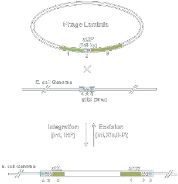

Recombination involves rearrangements in DNAs over homologous sequences. There are some recombinases that act on very specific sequences, while others are not specific about the sequence; they recombine similar sequences.
Section divider: Recombinases, split into site-specific enzymes and those for homologous recombination.
Cre Recombinase
Recombines the Lox sequence: ATAACTTCGTATA – ATGTATGC – TATACGAAGTTAT
Parallel sites in a DNA result in excision
Antiparallel sites result in inversion
Often used for “floxing” a gene
Many similar systems exist including the Flp/FRT and Hin/hix systems
Cre recombinase comes from the E. coli phage P1 and recognizes a 34bp sequence and recombines two of them. The site is not palindromic, and thus is not the same sequence on both strands and it has directionality. For a DNA containing two such sites, they can be arranged in the same orientation, called parallel, or on opposing strands called antiparallel. Parallel site recombination, topologically speaking, results in excision of any intermediate sequence while antiparallel sites undergo inversion. Such flipping systems are popular targets for controlling gene expression. Floxing a gene means to encode a gene flanked by lox sites into the genome of a cell. Through later expression of cre in the cell, that gene is excised and thereby deleted.
Two schematics side by side. On the left, two lox sites pointing the same way flank a gene; recombination excises the gene. On the right, the lox sites point in opposite directions; recombination inverts the gene instead.
Phage att Sites
Most common from phi80, lambda, HK022, P21, P22, and phiC31 lysogenic and integrative phages
The lox-like components are called att sites, but much longer
The cre-like components are called Int recombinases or integrases
They also can include Xis protein, which switches the preferred directionality
Used for integrating DNAs into the genome
Used in the Gateway reaction

Another popular sequence-specific recombinase type are phage att sites. Most of these recombinases act on asymmetric substrates and thus the reaction has directionality. In the most popular system, from lambda phage, a DNA with the attP sequence is recombined with a DNA such as the genome with an attB sequence. The resulting sequences are named attL and attR and are different sequences than attP and attB. Thus, the reaction is not symmetric and can be driven in one direction or the other. The recombinase component is called the Int recombinase, and then there is a second protein called Xis which upon expression reverses the directionality of the reaction. These enzymes are used in some methods of genome engineering, the Gateway cloning method of moving DNAs from one DNA to another, and in several genetic circuits for digitally controlling gene expression.
Phage att sites, illustrated with lambda attP recombining into the E. coli genome attB site to produce attL and attR — a directional reaction reversed by the Xis protein.
Homologous Recombination
Yeast and B. subtilis readily catalyze homologous recombination
E. coli requires additional genes for it to be efficient
The lambda Red genes (from lambda phage) are one such set of genes
Used for “recombineering” — recombination-based manipulation of the genome or plasmids in E. coli
Often used for knocking out genes in E. coli
Endogenous RecA protein is also involved in the reaction
RecA is a protein involved in DNA repair pathways that stabilizes single-stranded DNAs
RecA can also be used to promote homologous recombination in vitro
The other type of recombinases are sequence-independent and used primarily in vivo. Yeast and B. subtilis readily catalyze homologous recombination between two very similar sequences. E. coli can also do it, but requires additional genes for it to be efficient. This is most often satisfied by introduction of the lambda Red genes from lambda phage. This process is useful for recombineering, which is recombination-based manipulation of the genome or plasmids in E. coli using synthetic DNAs. The most common example involves deleting specific genes in the genome by recombination with an antibiotic selection marker flanked by sequences homologous to the gene. The cellular RecA protein is also involved in the reaction. In the cell it is involved in DNA repair pathways by stabilizing single-stranded DNAs. RecA can also be used to promote homologous recombination in vitro, forming the basis of some DNA fabrication methods.
Homologous recombination: efficient in yeast and B. subtilis, needing lambda Red genes in E. coli, and the basis of recombineering.